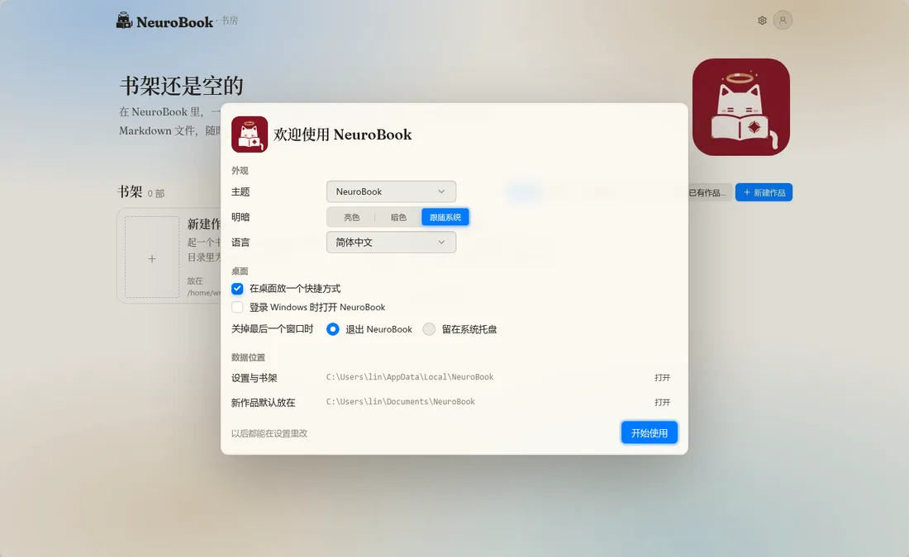
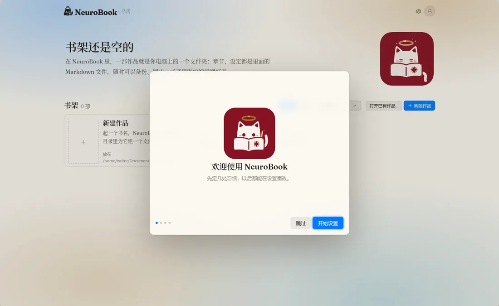
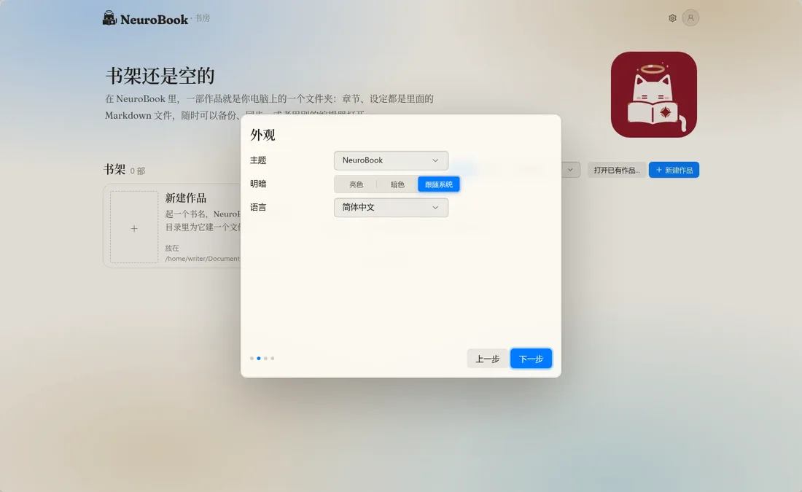
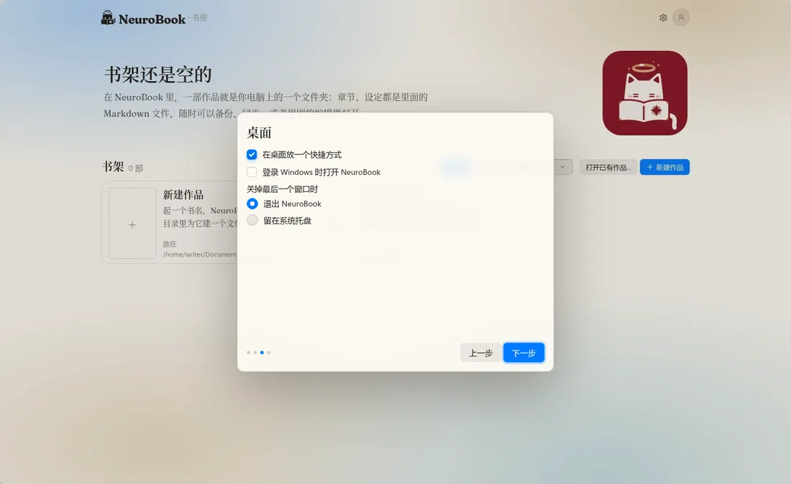
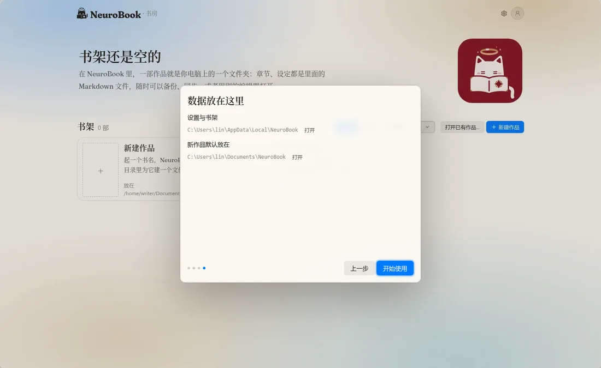

t02 第 1 轮：首次启动向导
首次启动向导做成一页对话框，还是分步向导？
推荐 A 一页：七项设置一屏放得下，看一眼就能点“开始使用”；分步要点四次，每步内容又很少。
A 一页对话框

外观、桌面、数据位置三组；“以后都能在设置里改”放在页脚状态行。
B 分步向导（欢迎 → 外观 → 桌面 → 数据位置）




第一步有“跳过”；以后加外部工具检测（t05）时多一步。
直接修，不用答
| 哪里 | 改成什么 |
|---|---|
| 主题、明暗、语言 | 选了立刻生效，对话框和背后的书架一起换 |
| 便携版 | 不显示“在桌面放一个快捷方式”（便携版没有安装，不建快捷方式） |
| 出现时机 | 每个数据目录第一次打开桌面版时出现一次；完成或按 Esc 都算看过；命令面板里可以再打开；浏览器里不出现 |
| 路径 | 可以选中复制；“打开”在资源管理器里打开 |
现状与参照
| Electrobun 2.0.6 的安装程序 | 英文进度框“NeuroBook Setup”，装完自动打开；装在 %LOCALAPPDATA%\io.github.notnotype.neurobook\stable；桌面与开始菜单快捷方式都建，每次更新后重建；没有任何可配置项（调研见 t02 的 evidences/research-r1.md） |
| 参照 | VS Code 首次启动在欢迎页挑主题；Discord、Slack 这类 Squirrel 安装也不问位置 |
已定
- 继续用 Electrobun 的安装程序，选项放到首次启动向导里（会话里定）
- 向导里问：桌面快捷方式、登录时打开、关窗去向、主题与语言；数据位置只显示（会话里定）
- 上游先不提 issue（会话里定）